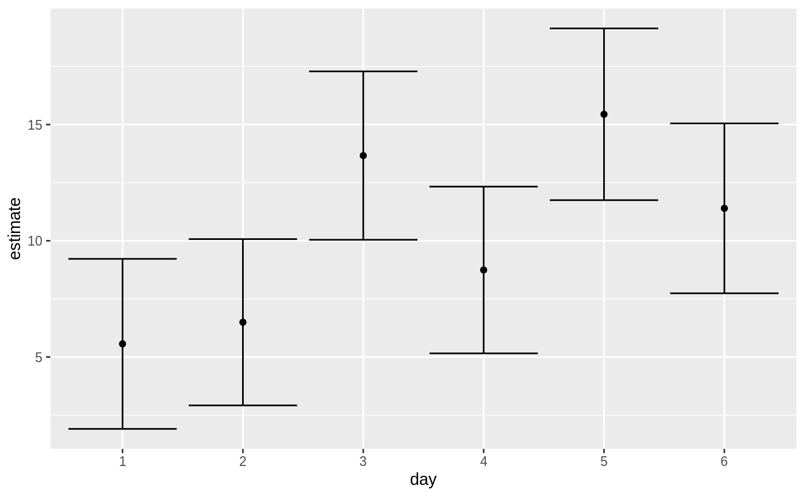
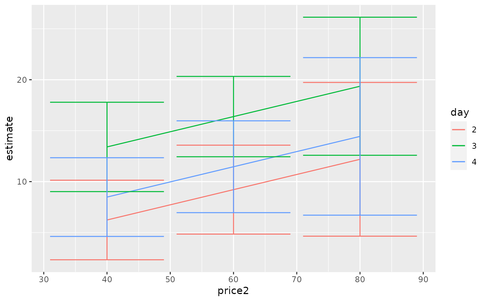

Tidy summarizes information about the components of a model. A model component might be a single term in a regression, a single hypothesis, a cluster, or a class. Exactly what tidy considers to be a model component varies across models but is usually self-evident. If a model has several distinct types of components, you will need to specify which components to return.
# S3 method for summary_emm tidy(x, null.value = NULL, ...)
| x | A |
|---|---|
| null.value | Value to which estimate is compared. |
| ... | Additional arguments passed to |
Returns a data frame with one observation for each estimated marginal mean, and one column for each combination of factors. When the input is a contrast, each row will contain one estimated contrast.
There are a large number of arguments that can be
passed on to emmeans::summary.emmGrid() or lsmeans::summary.ref.grid().
tidy(), emmeans::ref_grid(), emmeans::emmeans(),
emmeans::contrast()
Other emmeans tidiers:
tidy.emmGrid(),
tidy.lsmobj(),
tidy.ref.grid()
A tibble::tibble() with columns:
Upper bound on the confidence interval for the estimate.
Lower bound on the confidence interval for the estimate.
Levels being compared.
Degrees of freedom of the denominator.
Degrees of freedom used by this term in the model.
Value to which the estimate is compared.
Degrees of freedom.
The two-sided p-value associated with the observed statistic.
The standard error of the regression term.
One level of the factor being contrasted
The other level of the factor being contrasted
Model term in joint tests
Expected marginal mean
T-ratio statistic or F-ratio statistic
library(emmeans) # linear model for sales of oranges per day oranges_lm1 <- lm(sales1 ~ price1 + price2 + day + store, data = oranges) # reference grid; see vignette("basics", package = "emmeans") oranges_rg1 <- ref_grid(oranges_lm1) td <- tidy(oranges_rg1) td#> # A tibble: 36 x 9 #> price1 price2 day store estimate std.error df statistic p.value #> <dbl> <dbl> <chr> <chr> <dbl> <dbl> <dbl> <dbl> <dbl> #> 1 51.2 48.6 1 1 2.92 2.72 23 1.07 0.294 #> 2 51.2 48.6 2 1 3.85 2.70 23 1.42 0.168 #> 3 51.2 48.6 3 1 11.0 2.53 23 4.35 0.000237 #> 4 51.2 48.6 4 1 6.10 2.65 23 2.30 0.0309 #> 5 51.2 48.6 5 1 12.8 2.44 23 5.23 0.0000261 #> 6 51.2 48.6 6 1 8.75 2.79 23 3.14 0.00459 #> 7 51.2 48.6 1 2 4.96 2.38 23 2.09 0.0482 #> 8 51.2 48.6 2 2 5.89 2.34 23 2.52 0.0190 #> 9 51.2 48.6 3 2 13.1 2.42 23 5.41 0.0000172 #> 10 51.2 48.6 4 2 8.14 2.35 23 3.46 0.00212 #> # … with 26 more rows#> # A tibble: 6 x 6 #> day estimate std.error df statistic p.value #> <chr> <dbl> <dbl> <dbl> <dbl> <dbl> #> 1 1 5.56 1.77 23 3.15 0.00451 #> 2 2 6.49 1.73 23 3.76 0.00103 #> 3 3 13.7 1.75 23 7.80 0.0000000658 #> 4 4 8.74 1.73 23 5.04 0.0000420 #> 5 5 15.4 1.79 23 8.65 0.0000000110 #> 6 6 11.4 1.77 23 6.45 0.00000140#> # A tibble: 6 x 8 #> term contrast null.value estimate std.error df statistic adj.p.value #> <chr> <chr> <dbl> <dbl> <dbl> <dbl> <dbl> <dbl> #> 1 day 1 effect 0 -4.65 1.62 23 -2.87 0.0261 #> 2 day 2 effect 0 -3.72 1.58 23 -2.36 0.0547 #> 3 day 3 effect 0 3.45 1.60 23 2.15 0.0637 #> 4 day 4 effect 0 -1.47 1.59 23 -0.930 0.434 #> 5 day 5 effect 0 5.22 1.64 23 3.18 0.0249 #> 6 day 6 effect 0 1.18 1.62 23 0.726 0.475#> # A tibble: 15 x 8 #> term contrast null.value estimate std.error df statistic adj.p.value #> <chr> <chr> <dbl> <dbl> <dbl> <dbl> <dbl> <dbl> #> 1 day 1 - 2 0 -0.930 2.47 23 -0.377 0.999 #> 2 day 1 - 3 0 -8.10 2.47 23 -3.29 0.0337 #> 3 day 1 - 4 0 -3.18 2.51 23 -1.27 0.799 #> 4 day 1 - 5 0 -9.88 2.56 23 -3.86 0.00913 #> 5 day 1 - 6 0 -5.83 2.52 23 -2.31 0.229 #> 6 day 2 - 3 0 -7.17 2.48 23 -2.89 0.0777 #> 7 day 2 - 4 0 -2.25 2.44 23 -0.920 0.937 #> 8 day 2 - 5 0 -8.95 2.52 23 -3.56 0.0184 #> 9 day 2 - 6 0 -4.90 2.45 23 -2.00 0.371 #> 10 day 3 - 4 0 4.92 2.49 23 1.98 0.385 #> 11 day 3 - 5 0 -1.78 2.47 23 -0.719 0.978 #> 12 day 3 - 6 0 2.27 2.54 23 0.894 0.944 #> 13 day 4 - 5 0 -6.70 2.49 23 -2.69 0.115 #> 14 day 4 - 6 0 -2.65 2.45 23 -1.08 0.883 #> 15 day 5 - 6 0 4.05 2.56 23 1.58 0.617# plot confidence intervals library(ggplot2) ggplot(tidy(marginal, conf.int = TRUE), aes(day, estimate)) + geom_point() + geom_errorbar(aes(ymin = conf.low, ymax = conf.high))# by multiple prices by_price <- emmeans(oranges_lm1, "day", by = "price2", at = list( price1 = 50, price2 = c(40, 60, 80), day = c("2", "3", "4") ) ) by_price#> price2 = 40: #> day emmean SE df lower.CL upper.CL #> 2 6.24 1.89 23 2.33 10.1 #> 3 13.41 2.12 23 9.02 17.8 #> 4 8.48 1.87 23 4.62 12.3 #> #> price2 = 60: #> day emmean SE df lower.CL upper.CL #> 2 9.21 2.11 23 4.85 13.6 #> 3 16.38 1.91 23 12.44 20.3 #> 4 11.46 2.18 23 6.96 16.0 #> #> price2 = 80: #> day emmean SE df lower.CL upper.CL #> 2 12.19 3.65 23 4.65 19.7 #> 3 19.36 3.27 23 12.59 26.1 #> 4 14.44 3.74 23 6.71 22.2 #> #> Results are averaged over the levels of: store #> Confidence level used: 0.95#> # A tibble: 9 x 7 #> day price2 estimate std.error df statistic p.value #> <chr> <dbl> <dbl> <dbl> <dbl> <dbl> <dbl> #> 1 2 40 6.24 1.89 23 3.30 0.00310 #> 2 3 40 13.4 2.12 23 6.33 0.00000187 #> 3 4 40 8.48 1.87 23 4.55 0.000145 #> 4 2 60 9.21 2.11 23 4.37 0.000225 #> 5 3 60 16.4 1.91 23 8.60 0.0000000122 #> 6 4 60 11.5 2.18 23 5.26 0.0000244 #> 7 2 80 12.2 3.65 23 3.34 0.00282 #> 8 3 80 19.4 3.27 23 5.91 0.00000502 #> 9 4 80 14.4 3.74 23 3.86 0.000788ggplot(tidy(by_price, conf.int = TRUE), aes(price2, estimate, color = day)) + geom_line() + geom_errorbar(aes(ymin = conf.low, ymax = conf.high))#> # A tibble: 4 x 5 #> term num.df den.df statistic p.value #> <chr> <dbl> <dbl> <dbl> <dbl> #> 1 price1 1 23 30.3 0.0000134 #> 2 price2 1 23 2.23 0.149 #> 3 day 5 23 4.88 0.00346 #> 4 store 5 23 2.52 0.0583